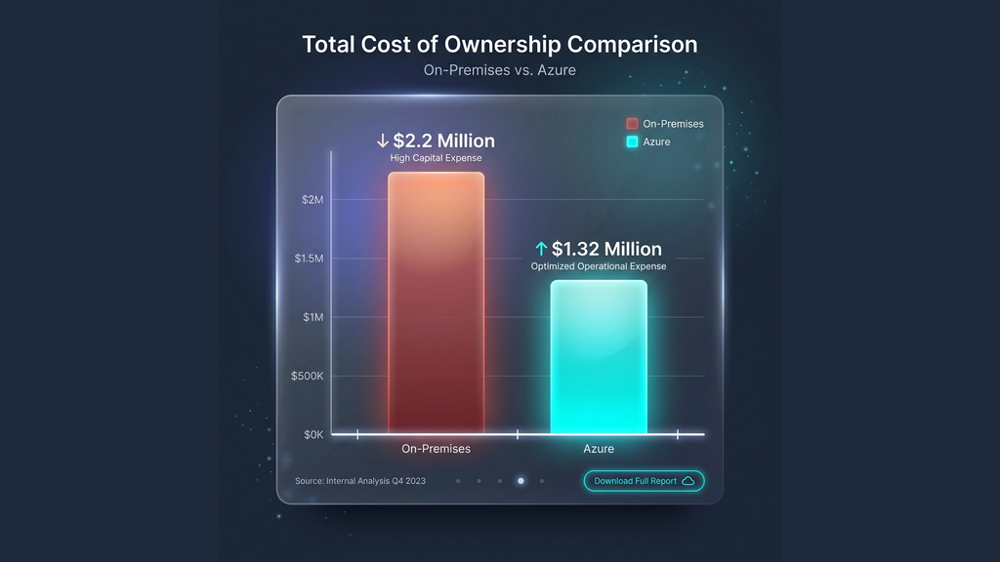
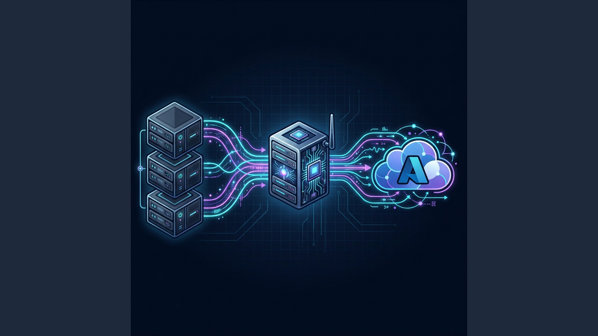
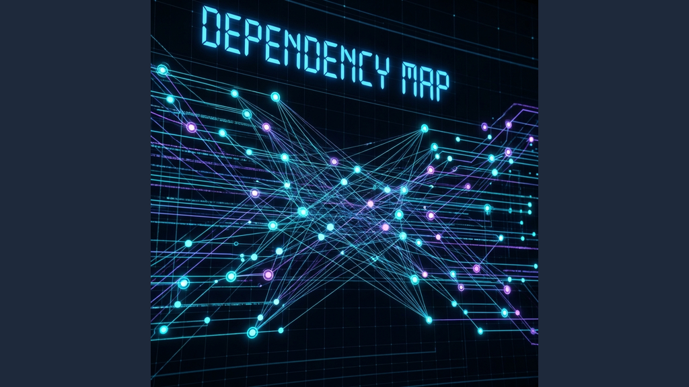
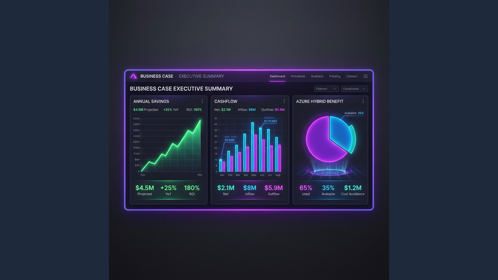

A practical, first-timer guide to build an Azure migration TCO, a Business Case, and a Wave 1 execution pack using Azure Migrate.
Most migrations stall for one reason: the team can’t answer three CXO questions with evidence:
- How much will it cost? (TCO)
- Why should we move now? (Business case)
- Can you prove you executed what you claimed? (PoE / evidence)
This guide + the “Wave 1 Starter Kit” gives you a usable starting point.
The cast

Upendra
Lead Architect

Trinity
Cloud Engineer

Morpheus
Sec Architect

Project Manager
Wave 1 Lead
The story
Scene 1: The question UKLifeLabs leadership asks
UKLifeLabs leadership: “Wave 1 is 30 app services. When do we get confidence, and what do we need to approve it?”
The Project Manager adds: “We need a decision pack. Not opinions.”
Upendra sets the rule:
“No guesses. We’ll use Azure Migrate to measure reality and then turn that into a TCO + business case.”
TCO vs ROI vs Business Case

Visualizing the savings: TCO is the math foundation.
TCO
Total Cost of Ownership is the total cost to run workloads over a period (usually 3 to 5 years).
- On-prem TCO usually includes:
- Hardware (compute, storage, network)
- Data center costs (space, power, cooling)
- Licensing (OS, DB, middleware)
- Support contracts
- Operations labor
- Downtime impact (often missed)
- Azure TCO usually includes:
- VM or PaaS compute
- Disks, backups
- Networking (VPN/ER, bandwidth, load balancers)
- Security services
- Monitoring
- Ops labor (often reduced, not zero)
ROI
Return on Investment answers: “What do we get back, and when do we break even?”
Business Case
A Business Case is the exec decision narrative.
It uses TCO and ROI, but also includes:
- Risk reduction (security, DR, compliance)
- Speed (faster provisioning, releases)
- Growth (scale, new digital products)
- Delivery plan and governance
Rule: TCO is the math. Business case is the decision.
How Azure Migrate helps you build TCO and the Business Case

Agentless discovery data flow: From VMware/Hyper-V to Azure.
Azure Migrate is your “facts engine.”
What you do in practice
- Create Azure Migrate project
- Discover servers (via appliance or integrations)
- Collect performance data (CPU/RAM/disk/network over time)
- Run assessments (readiness + sizing + cost)
- Generate business case (where supported) and export the outputs
Why this matters
If you skip measured performance, you’ll oversize in Azure and lock in waste.
The Wave 1 playbook (30 app services)
Step 1. Define Wave 1 boundaries
Upendra + Project Manager:
- Confirm which 30 app services are in Wave 1
- Define “done”: migrated, validated, monitored, backed up, signed off
Step 2. Discovery completeness check
Trinity:
- Confirm coverage: all Wave 1 servers discovered
- Identify gaps early: appliances not reaching segments, firewall blocks, unsupported OS
Step 3. Dependencies and network truth

Visualize interconnections to define the "Move Group" boundary.
Trinity + Morpheus:
- Capture inbound/outbound flows
- Tag each flow as:
- Must-have (app breaks without it)
- Nice-to-have (monitoring, admin)
- Legacy/noise (old agents, scanning, random)
Output: a “minimum viable ruleset” for Wave 1.
Step 4. Landing zone readiness gate
Morpheus + Upendra:
- Identity, RBAC, logging, key management
- Network segmentation, egress control
- Security baselines
- Backup + DR approach for Wave 1
Step 5. Sizing + cost assessment
Upendra:
- Use performance-based sizing where possible
- Apply license benefits and reserved capacity assumptions carefully
- Document assumptions (this is where audits happen)
Step 6. Build the TCO view
Neha (Finance lens, represented in the guidance):
- Put on-prem cost inputs (even if estimates)
- Compare with Azure run cost
- Add one-time migration costs (tools, effort, partner services)
Step 7. Write the Business Case

The executive summary: Annual savings, Cashflow, and ROI.
Project Manager:
- 1-page exec summary
- Risks + mitigations
- Wave plan + timeline
- Budget ask + approval checkpoints
Step 8. Execution + evidence (PoE)
This is how you avoid “nice deck, no proof.”
Collect evidence continuously:
- Discovery and assessment exports
- Change records
- Cutover runbook
- Validation results
- Monitoring enabled proof
- Customer sign-off
PoE (Proof of Execution) in plain English
PoE = evidence that work was executed and outcomes happened.
Even when a migration is funded or co-invested, Microsoft and customers need proof for:
- Compliance and audit
- Quality control
- Preventing “paper migrations”
Typical PoE pack contents
- Before/after evidence
- discovery coverage
- assessment results
- migrated resources in Azure
- Execution evidence
- migration wave plan
- change tickets
- cutover checklist
- Validation evidence
- application smoke tests
- monitoring/alerts enabled
- backup enabled
- Customer acceptance
- sign-off email or approved document
(Exact requirements depend on the program and your partner agreement.)
Funding programs and why partners care
What partners typically get
Partners can benefit from Microsoft programs that:
- Reduce customer friction (funded assessment or migration activities)
- Accelerate Azure consumption and modernization
- Create a repeatable delivery motion
The reality
Funding rules vary by region, customer eligibility, workload type, and program rules.
Treat funding as a bonus. Build a business case that works even without it.
Funding process (high-level)
A practical, “don’t get stuck” sequence:
- Confirm eligibility with Microsoft field/partner contact
- Define scope (Wave 1 specifics, target services, timeline)
- Create plan + estimate (what will be delivered, when, and how measured)
- Collect required artifacts (see Starter Kit)
- Run delivery while capturing PoE continuously
- Submit PoE as required by the program
Wave 1 Starter Kit
Download and use the templates for:
- Server inventory, app inventory
- Dependency capture + port categorization
- Azure Migrate run tracker
- Landing zone readiness checklist
- TCO assumptions sheet
- Funding intake + PoE evidence checklist
- Wave plan, cutover runbook, validation test plan
- Customer sign-off email template
Common mistakes (what breaks migrations)
- Using static VM sizes instead of measured performance
- Treating “dependency mapping” as optional until cutover week
- No landing zone gate (identity, logging, network, backup)
- TCO built without assumptions documented
- PoE captured at the end (it will be missing)
Reference links
Documentation Hub
Official Azure Migrate guides and API refs.
Create Business Case
How-to guide for building the business case.
Assessment Logic
Deep dive into cost and sizing calculation.
Azure Accelerate
Expert help & funding (formerly AMMP).
Community Repo
Azure Migrate Explore tools & scripts.
CAF Landing Zones
Reference implementations for Enterprise Scale.


Ready to operationalize your Azure journey?
I help organizations turn stalled cloud initiatives into execution engines.